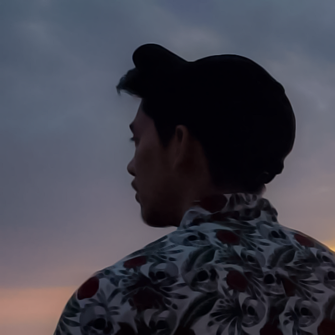
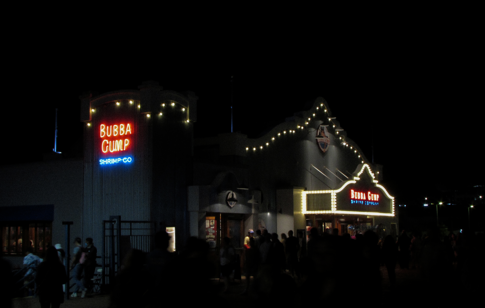

ABOUT ME.

My name is Fred Alexander Ayala. I'm a computer scientist with a minor in innovation and design at the University of Washington, Tacoma. I consider myself a self-proclaimed graphic designer, web developer, photographer, and creative. If I'm not hunched over my desk working on a project that will consume the next few weeks of my life, then I'm out with my camera, which, to be honest, has a big influence on my design work.
I grew up in the early 2000s, during the dawn of technology we currently use. As a child, this manifested into enrolling in robotics classes and falling in love with programming on Scratch. Since then, I had always been drawn to create art and put significant effort into things other people would see.

I am inspired by a very interesting and unique part of the web. During 2019, you may have heard of the virality of a new urban legend known as "The Backrooms," a seemingly endless labyrinth dimension of rooms and mundane spaces. After its inception, various photographs have risen from it, typically trying to capture the same liminality that the original image had.
Almost all the work that I've created up to this point has in some way been influenced by liminality. I am deeply affected by this aesthetic due to its deep, comforting sense of solitude and nostalgia. I believe that websites' structure and psychology are inherently liminal. The internet, as it stands, serves as a transition threshold between times, making their architecture, by nature, “betwixt and between.”
The website you are currently viewing is still under revision, and I plan to change and refine various aspects of the design.